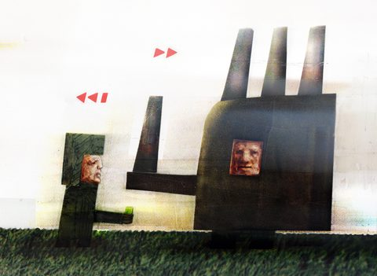
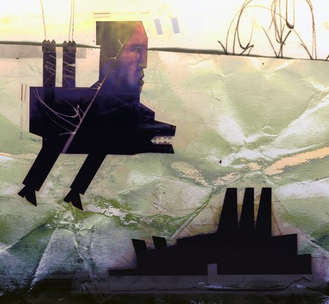
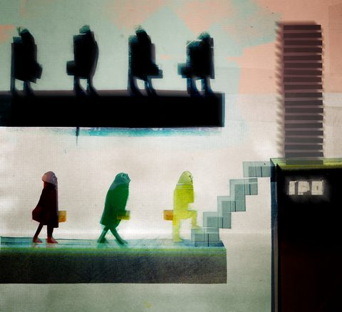
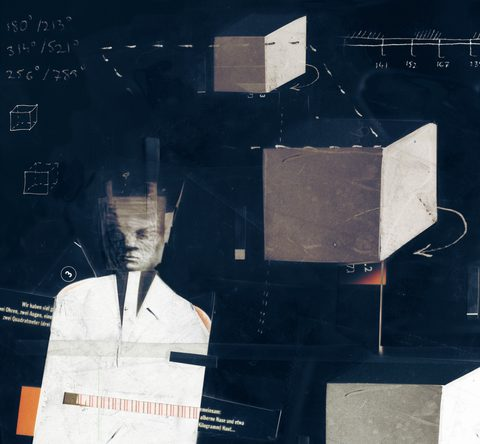
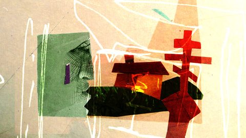
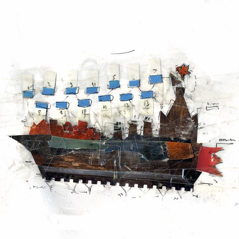
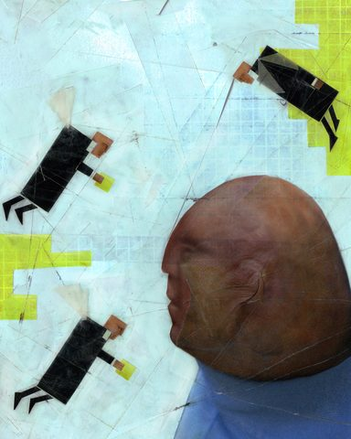
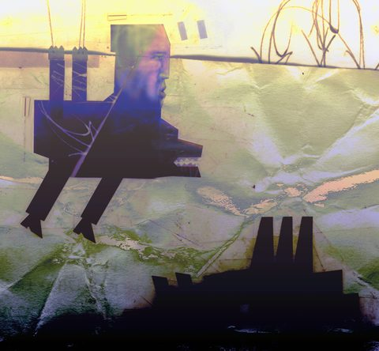
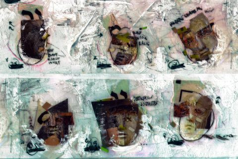
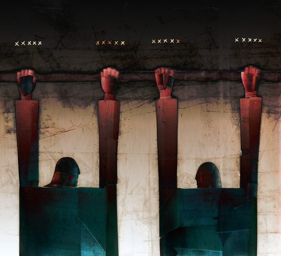

Selected works
Ten pieces from the artist's own BEST collection — the selection he made with his own eye. Click any work for the print-resolution file.

16 sf 17 gg

05 6

01 3 up 2

07 big 5

11 TR 2

REF out3 HAND UPSCL

08 cover fin2

21 5

REF 5ml 2

10 problems of russian economy
texture, light - all BEST. this is "ten problems of russian economy" and there is my detailed analysis ofthis work. SF Latent Archipelagus (assumption)
Artwork in motion
Two treatments of a single source collage. The material stays still; the viewpoint moves and the depth already built into the construction is revealed. Nothing is added to the picture.
A camera led
The source artwork holds still. The viewpoint shifts and the depth that was already built into the collage is revealed — no new object is introduced.
B freer motion
The source artwork holds still. The viewpoint shifts and the depth that was already built into the collage is revealed — no new object is introduced.
Colophon
- Selection
- Ten works drawn from the artist's own BEST collection, ranked by his own rating and then by measured spatial contrast so the set shows range. Nine other files in that folder were excluded on byte-hash evidence: they are machine generations, not original work.
- Provenance
- Every work on this page carries the SHA256 of its source file. Published images are web masters rendered at up to 2000 px on the long edge; the original bytes remain the reference, and the process video is published alongside its own source copy and hash.
- Voice
- Any quoted text is the artist's own, reproduced verbatim from his curation record and attributed to him. Nothing on this page has been paraphrased by an agent.
- Not shown
- No axis scores appear here. The six-axis framework is retired as evaluation doctrine and is not an artwork label; the artist's eye is the only judgement in this collection.
- Studio
- Gonduras Meat Market — a local-first art and generative research laboratory founded by the artist, with the artist as sole authority over its output.
- Enquiries
- Gonduras Meat Market, Jerusalem. Commissions, exhibitions, editorial and scenography work, and research collaboration.